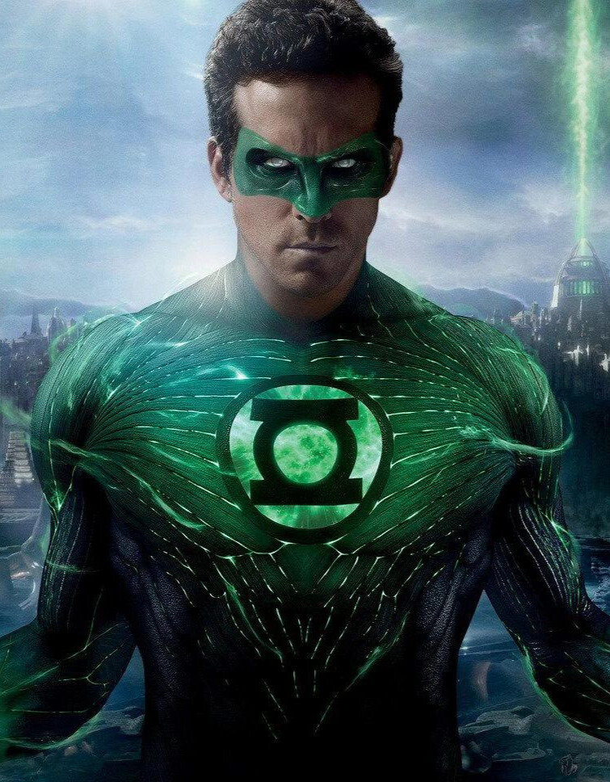

LANTERNA VERDE / HAL JORDAN
Lanterna Verde (em inglês: Green Lantern) é um nome compartilhado por diversos super-heróis da DC Comics. Criado por Martin Nodell e Bill Finger, o Lanterna Verde original estreou em All-American Comics nº16 (1940). Reformulado como um novo super-herói com o mesmo nome nos anos 60, o personagem original ficou conhecido através do nome que lhe foi chamando por seus pais de Alan Scott e por um tempo adotou a identidade de Sentinela (Brasil). O Lanterna Verde atual foi lançado nos quadrinhos da década de 60, e também é conhecido como "O Lanterna Verde da Era de Prata". A inspiração foi a série literária Lensman de E. E. Smith. A identidade do Lanterna Verde da Era de Prata, era a de , membro fundador da Liga da Justiça da América. Apesar do excelente trabalho do desenhista Gil Kane nesse período, era um personagem de super-herói relativamente genérico até que em 1970 a DC resolveu emparelhá-lo com o Arqueiro Verde (Oliver "Ollie" Queen), em uma série de quadrinhos absolutamente inovadora e de cunho social. Essa época ajudou a consolidar o novo Lanterna Verde como um herói popular, apesar das séries subsequentes abordarem temas mais cósmicos.